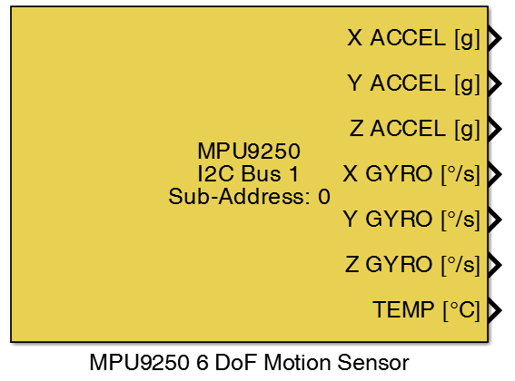
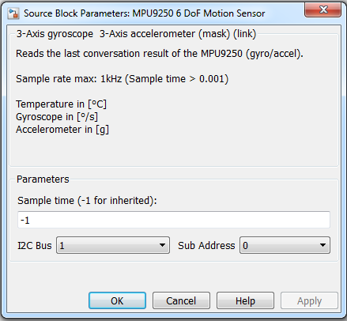

9.1. MPU9250 6 DoF Motion Sensor
Block enables the use of the MPU9250 with the STM32 boards.
9.1.1. Library
I2C
9.1.2. Description
{kind=link}
This block configured a digital MotionTracking device (MPU9250) on the selected I2C bus. MPU-9250 is a multi-chip module (MCM) consisting of two dies integrated into a single package. One die houses the 3-Axis gyroscope and the 3-Axis accelerometer. The other die houses the AK8963 3-Axis magnetometer from Asahi Kasei Microdevices Corporation. The two dies supported different output data rates. The 3-Axis gyroscope and the 3-Axis accelerometer supported output data rates up to 1kHz but the AK8963 3-Axis magnetometer supported only output data rates up to 100Hz. Because of that this block gets only the data from the 3-Axis gyroscope and the 3-Axis accelerometer. The block ‘’AK8963 3 DoF Motion Sensor’’ gets the data from the AK8963 3-Axis magnetometer.
| special settings for MPU9250: | |
| AFS_SEL = 1 | Accelerometer Full-Scale Range = -4g/+4g |
| FS_SEL = 1 | Gyroscope Full-Scale Range = -500 (degree/s) / +500 (degree/s) |
| Low-pass filter Gyroscope: | |
| Sample rate | 1kHz |
| Bandwidth | 41Hz |
| Low-pass filter temperature: | |
| Sample rate | 1kHz |
| Bandwidth | 42Hz |
| Low-pass filter Accelerometer: | |
| Sample rate | 1kHz |
| Bandwidth | 41Hz |
9.1.3. Data Type Support
9.1.4. Parameters and Dialog Box
9.1.4.1. Sample time
Set the sample time for this block.
Attention
The MPU9250 needs at least 1 ms for one conversation (Sample time > 0.001). If the sample time for this block is faster than this time the sensor may not produce valid values.
9.1.4.2. I2C Bus
Selects the I2C bus of the used STM32 MCU. Before you can use a I2C bus with this block you need a configuration block (I2C Config) for the I2c bus. The port number is related to the actual I2C number referred to the datasheet of the MCU.
Attention
Not all MCUs provide all of the selectable I2c ports.
9.1.4.3. Sub Address
You can connected max. two MPU9250 devices on one I2C bus by using different I2C addresses by using the AD0 pin. To selected the device with the AD0 pin connected to ground use sub address 0. To selected the device with the AD0 pin connected to VCC use sub address 1.